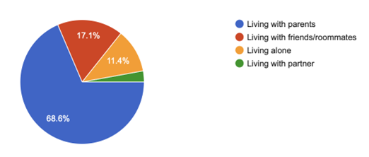

The Ways of Young Adults Prefer to Connect and Live
KUALA LUMPUR: Young Malaysians are seeking a balance, changing the way people interact and live. Thirty-five young individuals, mostly women aged between 22 to 35 were surveyed to determine the reasons for living with family or alone.
According to a poll of 35 participants, 17.1% of respondents currently live with friends, while 68.6% currently live with their parents. Just 2.9% of people live with a partner, while only 11.4% live alone.
48% of respondents stated that they would prefer to live alone in the future, claiming freedom, privacy, and peace of mind as the primary reasons for doing so. Another 22.9% stated that their decision would be influenced by their situation, namely their financial security.
Moving out was sometimes hit by high living expenses, particularly growing rental costs. Meanwhile, 17.1% of respondents indicated they would rather live with relatives, while others stated they would rather live with a significant other or close friends.
The results show that young adults' opinions are changing, with many now seeing isolation as a way to preserve autonomy and mental health rather than as loneliness. Some 68.6% also believed that modern society encourages young adults to live independently.
From the data, most of the respondents prefer to stay at home and have their “me-time” instead of going out with friends, it is because they feel more secure and can be called as an enjoyment for them. While 74.3% of the respondents feel happy and relaxed with their friends, many claim that when they are feeling down, they will choose to stay alone.
However, 45.7% of the respondents claimed that staying with family is warm and secure. While 37.1% said it depends on the situation as well, followed by the rest saying that they have nothing much to talk about or stress while they are with the family. The results imply that communication styles, personal space, and different lifestyles can all have an impact on the complicated relationships that might exist between young adults and their parents.
While some people see friends almost every day or rarely, the majority only see them once or twice a week. There are also differences in choices with regard to how to spend free time: many people enjoy being alone, while others want to spend it with friends or family.
“Me time is the best," said one respondent.
“Being alone allows me to do my own things without being influenced by others' opinions," said another.
The results show that young Malaysians are beginning to value their freedom, privacy, and mental health while maintaining strong relationships with those they can trust. Many people view loneliness as a decision that achieves a balance between independence and connection rather than isolation.